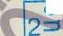

Е1/Г1
civai
Производственная компания
Общество с ограниченной ответственностью производственная компания «Техническая экспертиза, комплексы, системная инженерия» Аттестат аккреднтшцш № RA.RU.311245
СВИДЕТЕЛЬСТВО О ПОВЕРКЕ №0110614
Действительно до «2 ¥)> о ^^,о22С,г ~.
Средство измерений:
наименование и тит/, модификация средства /Миграционный
государственный реестр № ЛИВ
номер в Федеральном фонде по обеспечению единства измерений присвоенный, при утверждении типа
I заводской (серийный) номер г
в составе —
номер знака предыдущей поверки поверено в полном объёме
наименование единиц величинАдиапазонов измерений, на которых поверено средство измерений
В соответствии С МИ 1592-2015 «Рёкоменд^ия ^^к^четчики воды. Методика поверки» наименование или обозна^в&ие дсАЯЯЯЯй. наосновании которого выполнена поверка
с применением эталонов: рабочищрдлдлон 3?го разряда УПСЖ ЗПМ№ 465
регистрационный номер и (или) наименование, тип, заводской номер.
разряд, класс или погрешность эталонов, применяемых при поверке
при следующих значениях влияющих факторов температура воздуха ^22°С,
перечень влияющих факторов,
тмосферное давление ^т. ст., относительная влажность воздуха (2%
нормированных в документе на методику поверки, с указанием их значений и на основании результатов первичной (периодической) поверки признано требованиям.^ пригодным к применению.
Знак Номерки:
|
■ ■ «pt е |
|  |
Пасякин Сергей Анатольевич
Руководитель^^.
(Начал ьниК 'Седстора) 1
Поверитель
фамилия, имя и отчество (при наличии)
Иванов Алексей Марселевич
фамилия, имя и отчество (при наличии)
Дата поверки
2 9» о 8 2о 2&.